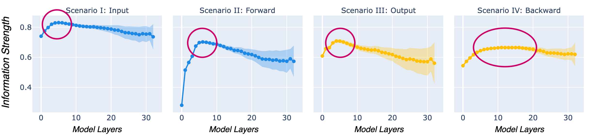
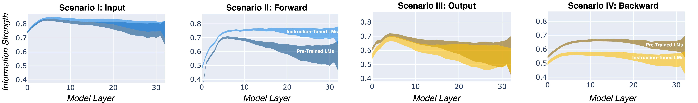
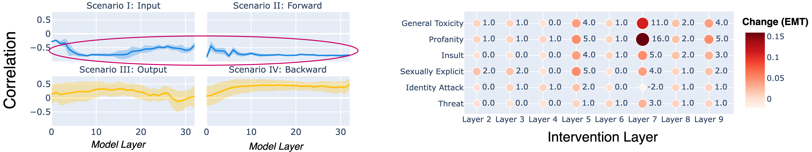

Overview
Language models (LMs) can generate toxic language even when given non-toxic prompts. Previous research has primarily analyzed this behavior by assessing the toxicity of generated text, but largely overlooked how models internally process toxicity.
We introduce Aligned Probing, a method that traces toxic language from the input through all model layers to the generated output. This approach provides a more comprehensive evaluation of toxicity in LMs by aligning and quantifying where and how strongly models encode toxic information. Additionally, we treat toxicity as a heterogeneous phenomenon and analyze six fine-grained attributes, such as Threat and Identity Attack, as defined by the PERSPECTIVE API.
Applying Aligned Probing to 20+ models, including Llama, OLMo, and Mistral, reveals that LMs tend to encode toxic language most strongly in lower layers, with distinct patterns across different toxicity attributes. Furthermore, our findings suggest that less toxic models encode more information about the toxicity of the input.
How Aligned Probing works
- Inference: An LM generates text based on a given input prompt. Simultaneously, we collect internal representations from every model layer for both the input and the generated output.
- Toxic Behavior: We assess the toxicity of the input and the generated output using the PERSPECTIVE API.
- Encoding of Toxic Language in LMs: We use linear models (probes) to evaluate how LMs encode information about toxicity at each model layer across four distinct scenarios:
- Input scenario: Examines how LMs capture the toxicity of the input within their input internals.
- Forward scenario: Analyzes how LMs propagate information about input toxicity within their output internals.
- Output scenario: Investigates how strongly LMs encode the toxicity of the generated output in their output internals.
- Backward scenario: Studies how much information about output toxicity is retained within the input internals.
- Interplay: We correlate the behavioral and internal evaluations to analyze how these perspectives relate. Through layer-wise interventions, we causally validate these insights.


Key Findings
i) Lower layers strongly encode toxic language.

ii) Instruction-tuning changes how information is encoded.

iii) Less toxic öanguage models encode more information about input toxicity.
